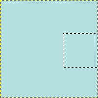
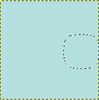

The command feathers the edges of the selection. This creates a smooth transition between the selection and its surroundings. You normally feather selection borders with the “Feather Edges” option of the selection tools, but you may feather them again with this command.

- Feather selection by
-
Enter the width of the selection border feathering. The default units are pixels, but you can also choose other units with the drop-down menu.
- Selected areas continue outside the image
-
If the selection is on border of the image (or goes beyond the border), this option acts as if the selected area continued outside the image.
Figure 16.23. Example

Original. Selection on border.

Option checked. The right border is not feathered.

Option unchecked